Celeron
Son procesadores económicos con dos núcleos físicos que ofrecen un buen rendimiento en ofimática general, multimedia y navegación.
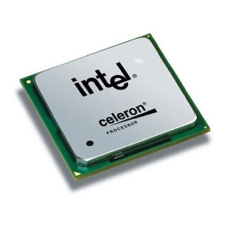
Atom
Procesadores de bajo consumo, utilizados en dispositivos móviles, tablets y ordenadores notebooks.
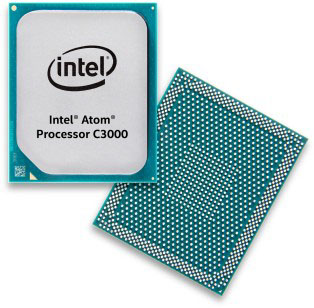
Pentium Core2Duo
Mejoran el rendimiento frente a los anteriores ofreciendo mayores frecuencias de reloj. Mantienen dos núcleos.
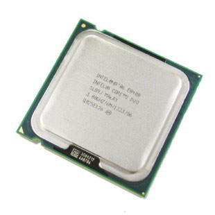
Pentium Core2Quad
Mayores frecuencias de reloj que los Core 2 Duo
Integran cuatro núcleos.
Familia Intel Core
Son los que tenemos actualmente en el mercado
Han desbancado a las familias anteriores
Se dividen en varias subfamilias:
Intel Core i3
Hasta 8 núcleos y 12 hilos (13 gen)
Adecuado para equipos económicos con rendimiento de ofimática
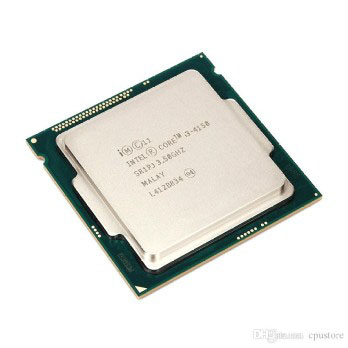
Intel Core i5
Hasta 14 núcleos y 20 hilos (14 gen)
Hay versiones reducidas (“U”) con menos núcleos
Buena relación precio-rendimiento para presupuestos medios
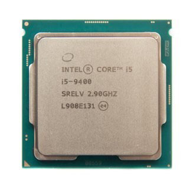
Intel Core i7
Hasta 20 núcleos y 28 hilos (14 gen)
Hay versiones reducidas (“U”) con menos núcleos
Mejoran el rendimiento de los i5. Uso profesional
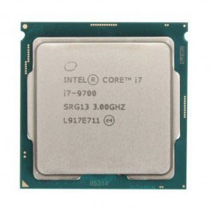
Intel Core i9
Hasta 24 núcleos y 32 hilos (14gen)
Sólo los aprovecharemos realmente si vamos a utilizar aplicaciones profesionales que dependan de una alta capacidad multihilo
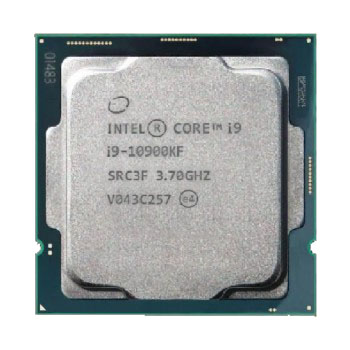
Serie X
Son los más potentes de la familia Intel Core
Utilizados para equipos que necesiten altas capacidades de rendimiento, como servidores en empresas de tamaño medio
Usan como base el diseño del Intel Core i9
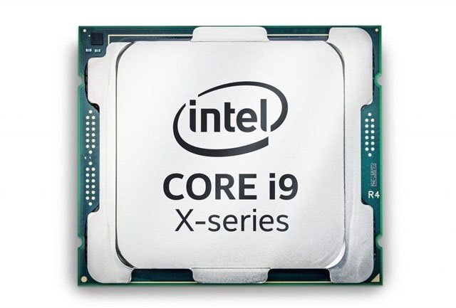
Intel XEON
Son los procesadores más avanzados diseñados por Intel
Hasta 56 núcleos y 112 hilos
Se usan para servidores de grandes empresas
Su precio es muy elevado
Existen versiones bronze, silver, gold y platinum y Max (usa memoria HBM)
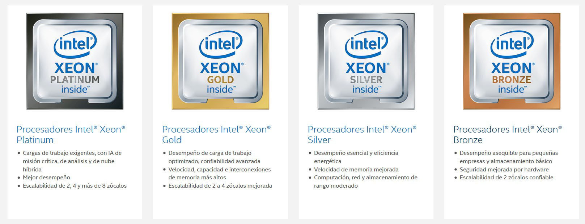
Significado del marcado Intel
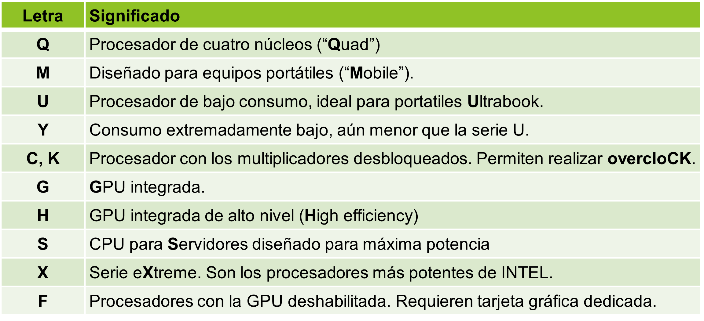
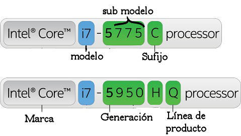